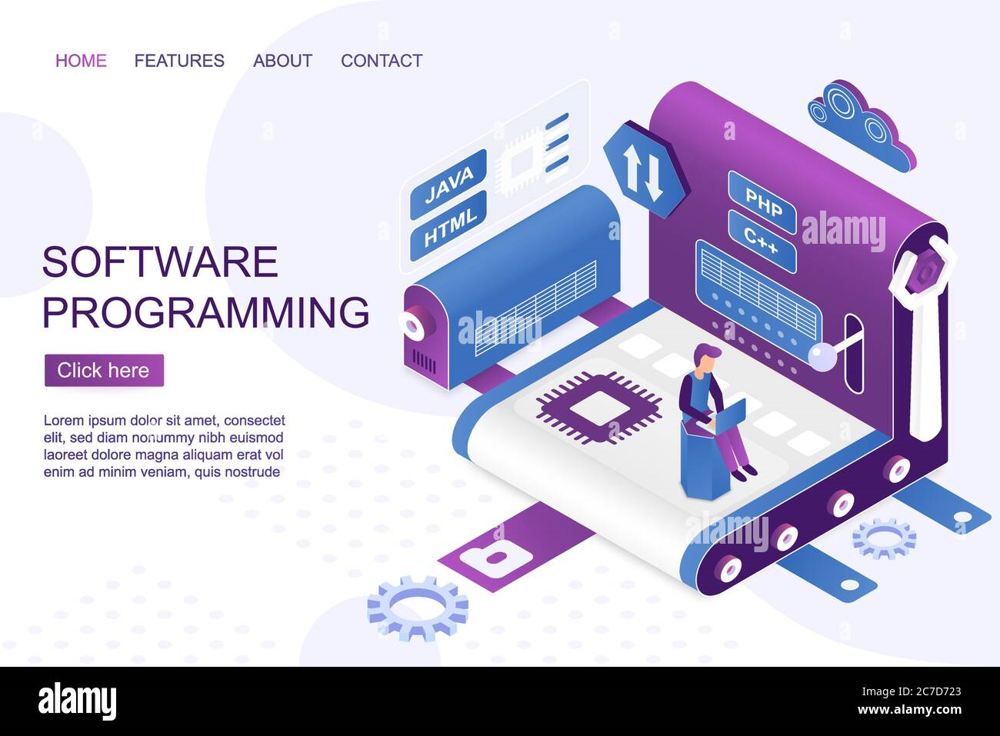
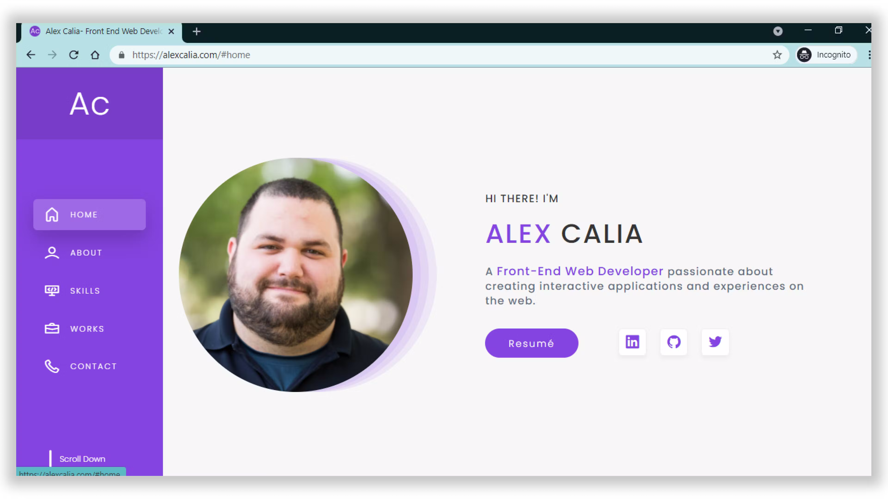
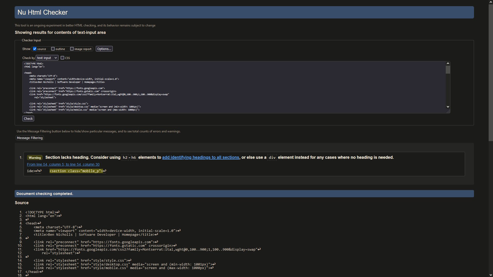
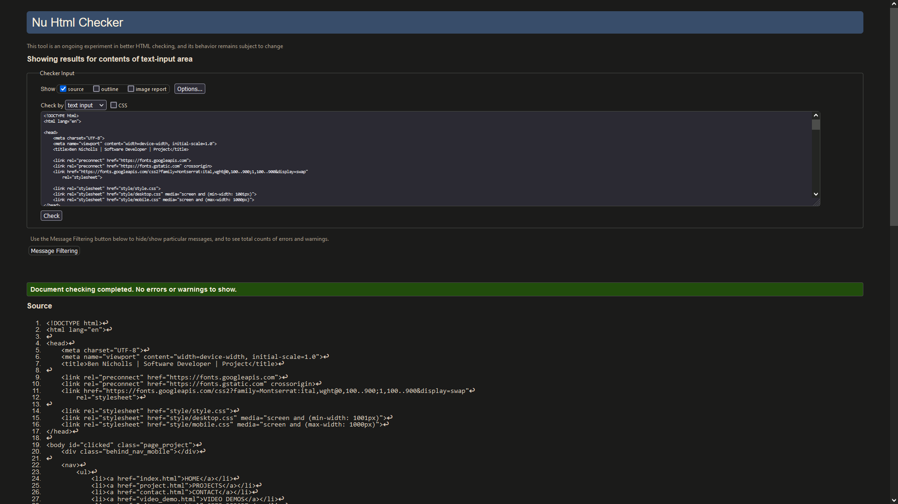
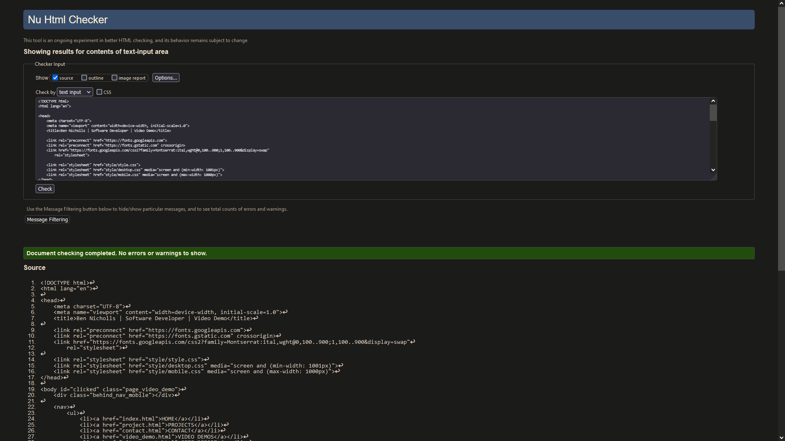
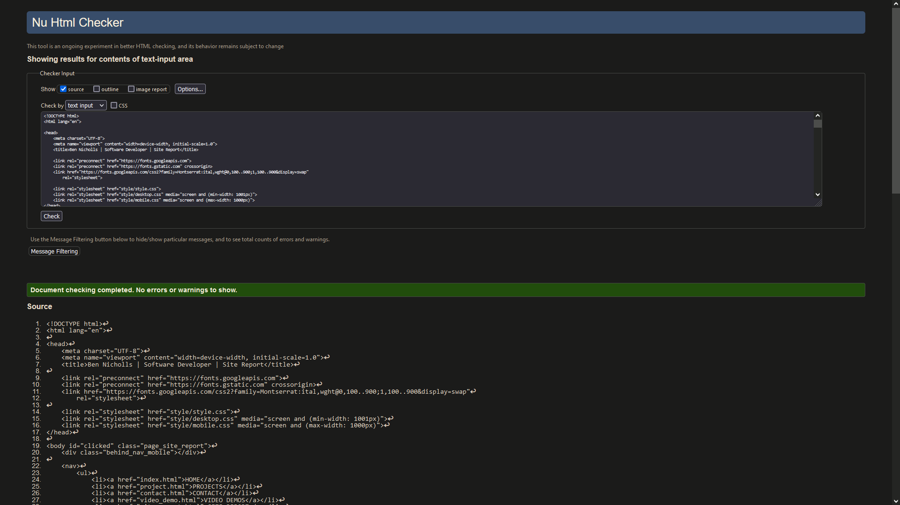
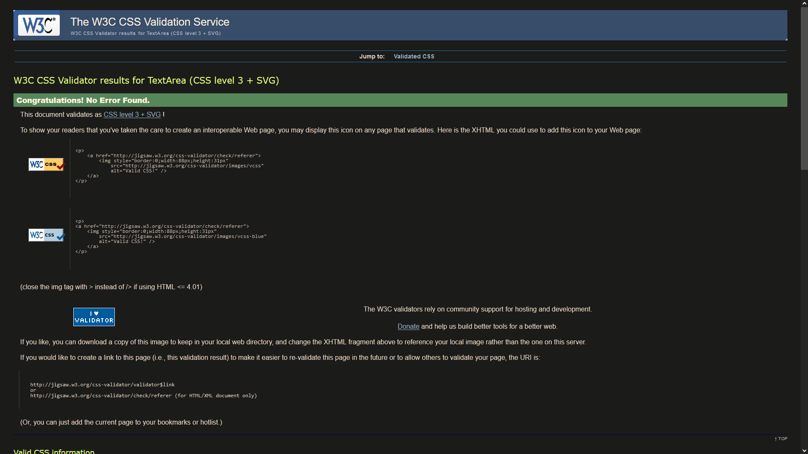
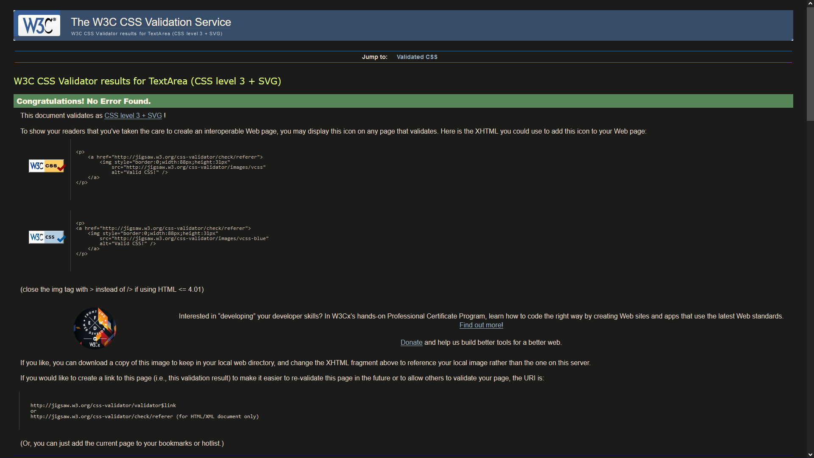

I found learning web development to initially be a smooth process. This is because I was familiar with basic HTML and CSS concepts I learnt in my college course last year, and I was used to programming so a lot of the concepts in coding for this project made sense to me easily. However, I found debugging my website to be a bit tricky because whenever there is a problem in HTML or CSS code, instead of an actual error, the website just won't look as intended, and this I found difficult to work around. Aditionally, I found designing the website to be a bit tricky as I needed to look for inspiration from pre-existing portfolio websites, but I eventually managed to settle down on an idea that I think worked successfully. Some positives aspects of the assignment was how I learnt current HTML and CSS standards of how to and not how to design a website. For example, I learnt what semantic tags are, deprecated tags such as frame, etc. I also enjoyed implementing the home page with the profile picture's effects and working with animations, and I think they went well. What didn't go so well however was working out how to implement elements and CSS correctly. Getting the positioning of elements correct was quite difficult, especially for the footer, but I was able to persevere and correctly implement everything.
I think the module went well. I found it really useful to have a refresher on my past web development knowledge and have new topics introduced in an engaging way in class. Following the exercises was useful because I was able to then take that content and insert it into my website, and when a topic was taught that I was already famililar with, I felt like I was ready to jump straight into that part of the project with that new knowledge. However, I felt that the lecture explaining Github would have been more helpful if it was more of as a "do alongside the presentation" lecture. I struggled with organising my time surrounding the module, and I know I could've made a website with more detail if I structured my time better earlier on.
Early on, I decided to use a more minimalistic design for my website, and this was to make it appear more professional, simple, and be true to myself for prospective employers to see. Using a mix of three colours - purple, white, and black (for the hamburger menu functionality) - helped to achieve this. The typeface, Montserrat, was chosen as the sole font of the website to enchance the professionalism and simplicity as well. Each page layout was also designed to serve the purpose of the pages' functionality, with the index page designed to introduce myself at a quick glance, the projects page desgined in a grid format to list out all of my projects, and the rest of the pages have its content stacked upon eachother as they did not need a specific type of organising to display the information to the user.
Below are two website designs that have influenced my website design choices.
(Volkovska, 2019)
(Calia, no date, cited in Rajpoot, 2021)
Below are screenshots of my website's validation.
Index Page:
Projects Page:
Contact Page:
Video Demos Page:
Site Report Page:
style.css:

desktop.css:
mobile.css:
Here is a link to the video demonstration.
Volkovska, Y. (2019) Software development isometric landing page vector template. Programming and coding website design layout. IT courses webpage. Computer science and engineering 3d concept illustration. Alamy [online]. Available from: https://www.alamy.com/software-development-isometric-landing -page-vector-template-programming-and-coding-website-design-layout-it-courses-webpage-computer-science-and-engineering-3d-concept-illustration-image366011243.html [Accessed 17/03/2024].
Rajpoot, S. (2021) 20 Developer Portfolios to Inspire You [2021]. Ak's Blog [online]. Available from: https://blog.aksinghrajpoot.com/20-developer-portfolios-to-inspire-you [Accessed 17/03/2024].